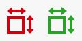

Wenn ein oder mehrere Werkstücke erstellt und in Parametrix importiert werden, fügt das Programm sie der Werkstückliste im rechten Bereich des Hauptbildschirms hinzu.
Über die Werkstückliste kann der Bediener:
Werkstücke in den Arbeitsbereich einfügen;
Die bearbeiteten und noch zu bearbeitenden Werkstücke verfolgen;
Bestimmte Änderungen an den Werkstücken vornehmen.

Listenelemente
Jede Zeile der Liste stellt ein in Parametrix importiertes Werkstück dar.

Wie in diesem Bild zu sehen ist, enthält eine Zeile folgende Informationen zum Werkstück:
Formvorschau | Vereinfachte Darstellung der Werkstückgeometrie. |
Werkstückkennzeichnung | Kennzeichnung, die dem Werkstück zur Identifizierung hinzugefügt wird. |
Anzahl eingefügter und gesamter Werkstücke | Gibt die Anzahl der Werkstücke dieser Zeile an, die in den Arbeitsbereich eingefügt wurden, sowie die Gesamtzahl der Werkstücke dieses Typs, die eingefügt werden können. |
Werkstücke in den Arbeitsbereich einfügen
Zum Einfügen der Werkstücke in den Arbeitsbereich wird die folgende Schaltfläche verwendet, die sich in jeder Zeile der Liste befindet:
 | Werkstücke in den Arbeitsbereich einfügen |
Das ausgewählte Werkstück wurde im Arbeitsbereich positioniert und die Anzahl der eingefügten Werkstücke dieser Zeile wurde aktualisiert.

Nach Erreichen der maximalen Anzahl verschwindet die Schaltfläche „Werkstücke einfügen“ in dieser Zeile, da alle Werkstücke dieser Zeile bearbeitet wurden.
Vorgänge an Werkstücken der Liste
Die Schaltflächen unter der Liste dienen zur Verwaltung der Listenelemente. Insbesondere:
Werkstückliste leeren | |
 | Handelswerkstücke ausblenden/anzeigen |
 | Werkstück löschen |
 | Werkstücke filtern/sortieren |
 | Zusätzliche Werkstückeigenschaften |
Werkstück löschen
Mit dieser Funktion können Werkstücke einzeln aus der Liste gelöscht werden. Nach Drücken der Schaltfläche fordert das Programm den Benutzer auf, die zu löschende Zeile auszuwählen, und ersetzt den Pfeil zum Einfügen der Werkstücke in den Arbeitsbereich durch einen Radiergummi.

Durch Drücken dieser Schaltfläche wird die entsprechende Zeile und damit alle von ihr dargestellten Werkstücke gelöscht.